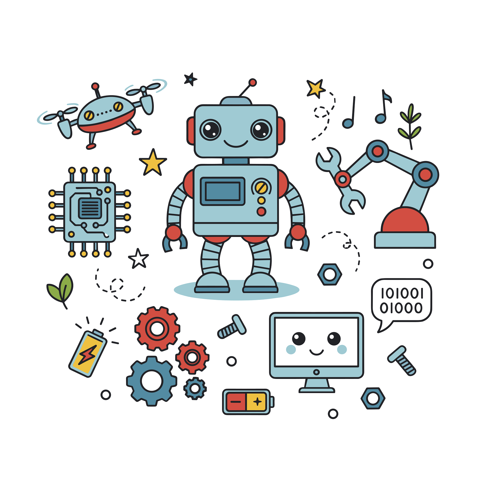
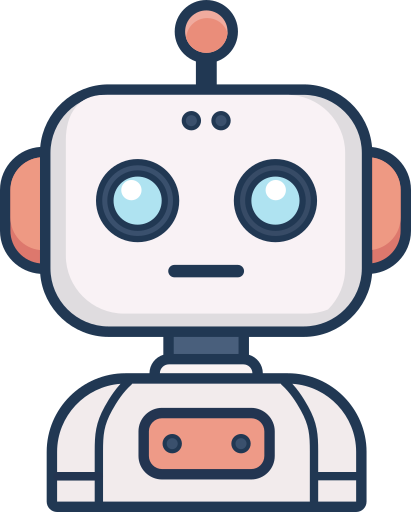

Miten RAG-arkkitehtuuri muuttaa yrityksesi datan asiantuntijaksi?
Tutustu siihen, miten Retrieval-Augmented Generation (RAG) mahdollistaa tekoälyn, joka ymmärtää yrityksesi omat tiedostot ja varmentaa faktoissa pysymisen.
Oppaita ja artikkeleita automaatiosta, tekoälystä ja PK-yritysten digitaalisesta kasvusta.

Tutustu siihen, miten Retrieval-Augmented Generation (RAG) mahdollistaa tekoälyn, joka ymmärtää yrityksesi omat tiedostot ja varmentaa faktoissa pysymisen.
PK-yrityksen arki tehostuu, kun rutiinit siirretään koneen huoleksi. Lue kolme käytännön esimerkkiä ajan säästämisestä.

Miten suomalainen PK-yritys säästää aikaa ja rahaa valjastamalla älykkään automaation prosessiensa tueksi?

Laskutus, raportointi, CRM-päivitykset... Listasimme kriittisimmät prosessit, joiden automatisointi tuo nopeimman ROI:n.

Nopeus, turvallisuus ja SEO-ystävällisyys. Modernit staattiset sivustot ovat PK-yrityksen paras työkalu digitaaliseen läsnäoloon.